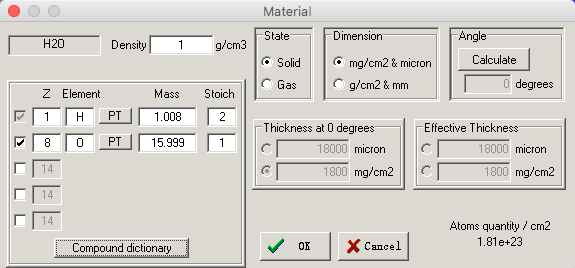
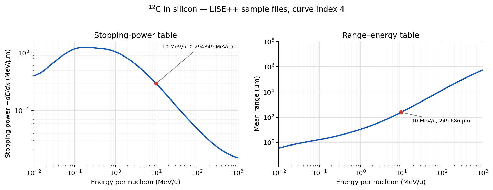

本页用于完成 ROOT Tutorial I 之后、开始作业 1.1 和 1.2 之前。阻止本领、射程以及 \(\Delta E-E\) 望远镜的物理原理见第一章课件；这里集中说明如何用 LISE++ 生成数据、识别导出文件中的模型和单位，并在 ROOT 中完成插值与有限厚度材料的平均能损计算。
完成本页后，应能够：
本页采用 ROOT C++。PyROOT 中使用的是相同的 TGraph
数据和相同的物理步骤。
LISE++ 的 stopping-power 曲线给出正值
\[ S(E)=-\frac{dE}{dx}>0, \]
range 曲线给出粒子从给定能量降到停止时的平均路径长度
\[ R(E_0)=\int_0^{E_0}\frac{dE}{S(E)}. \]
LISE++ 导出的横坐标通常是每核子能量
\[ \varepsilon=\frac{E}{A}\quad (\mathrm{MeV/u}), \]
而探测器中沉积的能量是总能量，单位为 MeV。代码中必须明确区分二者。
对于厚度为 \(\Delta x\) 的材料，若粒子能够穿出，可由射程曲线计算
\[ R_0=R(\varepsilon_0),\qquad R_1=R_0-\Delta x, \]
再由反函数 \(\varepsilon(R)\) 得到出射能量
\[ \varepsilon_1=R^{-1}(R_1),\qquad \Delta E=A(\varepsilon_0-\varepsilon_1). \]
若 \(R_0\leq\Delta x\)，粒子停在材料中，因而 \(\Delta E=E_0=A\varepsilon_0\)。这一方法考虑了粒子在材料中减速时 \(dE/dx\) 的变化；只有在很薄的材料中，才可近似使用 \(\Delta E\simeq S(E_0)\Delta x\)。
这里计算的是平均能损。能损涨落、多重散射、核反应、死层和探测器分辨不包含在这个模型中。
LISE++ 可从官方网站下载，提供 Windows、Linux 和 macOS 版本。本课程只使用其中的 energy-loss utility，不需要建立完整的束流线设置。
从主菜单依次选择：
Utilities \(\rightarrow\)
Plots: Energy loss, Ranges, Straggling, etc.
随后选择以下两项之一：
Stopping Power (dE/dx) in material versus Energy：生成
\(S(E/A)\)；Range in material versus Energy：生成 \(R(E/A)\)。
在弹出的窗口中设置：
Projectile：选择入射核素，而不只是元素；Material：选择吸收材料及其状态和密度；Units：本课程示例选择 micron。
作业 1.1 需要 water liquid。进入 Material 后选择
Compound dictionary，导入
Water liquid，并检查化学计量比和密度。作业 1.2 使用固态
Si。


选择 micron 后：
作业 1.1 最终要求 mm 和 MeV/mm，因此读取后分别使用
\[ R(\mathrm{mm})=\frac{R(\mu\mathrm{m})}{1000},\qquad S(\mathrm{MeV/mm})=1000\,S(\mathrm{MeV}/\mu\mathrm{m}). \]
LISE++ 会同时画出多条曲线。导出文件中每条曲线占据相邻的两列：第一列是能量，第二列是该模型的结果。曲线编号从 0 开始，并显示在图例和文件表头中。
本课程计算射程或总阻止本领时，应从表头标明的主模型中选择一条曲线。不要把 electrical/nuclear component 当作总阻止本领，也不要把 range straggling 或 lateral range 当作平均射程。
不同模型在低能区或高能区可能有明显差别。应在作业实际使用的能区比较曲线并记录所选模型；不要假定所有模型在整个能区都等价。阻止本领和射程应使用同一套模型，不能任意拼接不同编号的曲线。
本页提供的 \(^{12}\mathrm{C}\)–Si
示例文件使用
curveIndex = 4，以便结果可复现。这个编号只对应示例文件，处理自己导出的文件时必须重新查看表头。
在曲线窗口左侧选择
Save As，保存为文本文件。建议文件名同时写明入射核素、物质和物理量，例如：
12C-dedx_in_Si.txt
12C-range_in_Si.txt
proton-dedx_in_water.txt
proton-range_in_water.txt本页示例数据：\(^{12}\mathrm{C}\) 在 Si 中的 stopping power；\(^{12}\mathrm{C}\) 在 Si 中的 range。
LISE++ 文件的前三行包含标题和各曲线说明，后续数据按“能量—结果”成对排列。不同版本或不同图形可能包含不同数量的曲线，因此下面的函数不依赖固定的总列数，也不简单地假定前三行以后都是有效数据；它只处理能够完整转换为数值的行。
先在 ROOT C++ notebook 或宏中载入需要的头文件：
#include <TCanvas.h>
#include <TGraph.h>
#include <TPad.h>
#include <algorithm>
#include <cmath>
#include <fstream>
#include <iomanip>
#include <iostream>
#include <sstream>
#include <stdexcept>
#include <string>
#include <vector>然后定义读取函数：
TGraph* ReadLiseCurve(const char* inputFile, int curveIndex)
{
if (curveIndex < 0)
throw std::invalid_argument("curveIndex must be non-negative");
std::ifstream input(inputFile);
if (!input.is_open())
throw std::runtime_error(std::string("Cannot open: ") + inputFile);
auto* graph = new TGraph();
std::string line;
while (std::getline(input, line)) {
std::istringstream row(line);
std::vector<double> values;
double value = 0.0;
while (row >> value)
values.push_back(value);
const std::size_t xColumn = 2u * static_cast<std::size_t>(curveIndex);
const std::size_t yColumn = xColumn + 1u;
if (values.size() <= yColumn)
continue; // title, header, or incomplete row
const double x = values[xColumn]; // energy in MeV/u
const double y = values[yColumn]; // range or stopping power
if (std::isfinite(x) && std::isfinite(y))
graph->SetPoint(graph->GetN(), x, y);
}
if (graph->GetN() < 2) {
delete graph;
throw std::runtime_error("No usable LISE++ curve was found");
}
graph->Sort(); // required for interpolation in x
return graph;
}inputFile
是文本文件路径；文件位于当前工作目录时只需写文件名。curveIndex
是图例中的曲线编号，而不是文本文件从 1 开始计数的列号。函数返回一个
TGraph*：横坐标来自所选曲线的能量列，纵坐标来自紧邻其后的结果列。
读取示例文件：
const int curveIndex = 4; // only for the supplied example files
TGraph* gStopping = ReadLiseCurve("12C-dedx_in_Si.txt", curveIndex);
TGraph* gRangeRaw = ReadLiseCurve("12C-range_in_Si.txt", curveIndex);
gStopping->SetName("gStopping");
gRangeRaw->SetName("gRangeRaw");
std::cout << "stopping-power points: " << gStopping->GetN() << '\n';
std::cout << "range points: " << gRangeRaw->GetN() << '\n';读入数据后先画图。图形应连续，横坐标应按能量递增，且 mean range 必须随能量单调增加。若曲线明显不合理，应先检查模型编号和单位，不要继续计算。
auto* cCheck = new TCanvas("cCheck", "LISE++ data check", 1100, 430);
cCheck->Divide(2, 1);
cCheck->cd(1);
gPad->SetLogx();
gPad->SetLogy();
gStopping->SetLineColor(kBlue + 1);
gStopping->SetLineWidth(2);
gStopping->SetTitle(
"^{12}C in Si: stopping power;E/A (MeV/u);-dE/dx (MeV/#mu m)"
);
gStopping->Draw("AL");
cCheck->cd(2);
gPad->SetLogx();
gPad->SetLogy();
gRangeRaw->SetLineColor(kBlue + 1);
gRangeRaw->SetLineWidth(2);
gRangeRaw->SetTitle(
"^{12}C in Si: mean range;E/A (MeV/u);Range (#mu m)"
);
gRangeRaw->Draw("AL");
cCheck->Draw();TCanvas
的前两个参数是对象名和窗口标题，后两个参数是宽度和高度（像素）。Divide(2, 1)
将画布分成两列一行。SetTitle("title;x;y")
中的两个分号依次分隔图题、横轴题和纵轴题。Draw("AL") 中
A 表示绘制坐标轴，L 表示用线连接数据点。

TGraph::Eval(x) 在相邻数据点之间做线性插值。LISE++
表格足够密时，线性插值便于检查且适合后续大量重复调用；不要在表格范围之外依赖
Eval 的外推结果。
const double energyPerA = 10.0; // MeV/u
std::cout << std::fixed << std::setprecision(6)
<< "S(10 MeV/u) = " << gStopping->Eval(energyPerA)
<< " MeV/um\n"
<< "R(10 MeV/u) = " << gRangeRaw->Eval(energyPerA)
<< " um\n";使用本页示例文件应得到：
S(10 MeV/u) = 0.294849 MeV/um
R(10 MeV/u) = 249.686000 um这一步同时检查了文件、曲线编号和单位。它不是对模型精度的实验验证。
同一核素、同一模型的 \(S(\varepsilon)\) 与 \(R(\varepsilon)\) 还应近似满足
\[ S(\varepsilon)\simeq \frac{A}{dR/d\varepsilon}. \]
明显不满足通常意味着选错了列、混用了模型或单位转换有误；小差别可能来自表格离散化和插值。
只有单调增加的 mean-range 曲线才能交换横、纵坐标形成反函数。下面先补入物理边界点 \(R(0)=0\)，再构造 \(\varepsilon(R)\)。这个原点只应加入 range 曲线，不能加入 stopping-power 曲线。
TGraph* AddRangeOrigin(const TGraph* input)
{
if (!input || input->GetN() < 2)
throw std::invalid_argument("A valid range graph is required");
auto* output = new TGraph(*input);
output->Sort();
if (output->GetX()[0] > 0.0)
output->SetPoint(output->GetN(), 0.0, 0.0);
output->Sort();
return output;
}
TGraph* MakeInverseRange(const TGraph* gRange)
{
if (!gRange || gRange->GetN() < 2)
throw std::invalid_argument("A valid range graph is required");
for (int i = 1; i < gRange->GetN(); ++i) {
if (gRange->GetY()[i] <= gRange->GetY()[i - 1])
throw std::runtime_error("The selected curve is not a monotonic mean range");
}
auto* inverse = new TGraph(
gRange->GetN(), gRange->GetY(), gRange->GetX()
);
inverse->Sort();
return inverse; // x: range; y: energy per nucleon
}
TGraph* gRange = AddRangeOrigin(gRangeRaw);
TGraph* gEnergy = MakeInverseRange(gRange);下面的函数既可直接使用某一核素的 LISE++ range 文件，也可在作业 1.2 验证同位素标度关系后复用同一元素的参考曲线：
double EvalInside(const TGraph* graph, double x, const char* graphName)
{
if (!graph || graph->GetN() < 2)
throw std::invalid_argument(std::string("Invalid graph: ") + graphName);
const double xmin = graph->GetX()[0];
const double xmax = graph->GetX()[graph->GetN() - 1];
if (x < xmin || x > xmax)
throw std::out_of_range(std::string(graphName) + ": interpolation outside table");
return graph->Eval(x); // linear interpolation
}
double MeanEnergyLoss(int A, int Aref, double E0perA, double dx,
const TGraph* gRangeRef, const TGraph* gEnergyRef)
{
if (A <= 0 || Aref <= 0 || E0perA < 0.0 || dx < 0.0)
throw std::invalid_argument("A, Aref, E0perA, or dx is invalid");
if (E0perA == 0.0 || dx == 0.0)
return 0.0;
const double rangeScale = static_cast<double>(A) / Aref;
const double E0 = A * E0perA; // total incident energy in MeV
const double R0 = rangeScale * EvalInside(gRangeRef, E0perA, "R(E/A)");
if (dx >= R0)
return E0; // particle stops in this layer
const double R1ref = (R0 - dx) / rangeScale;
const double E1perA = EvalInside(gEnergyRef, R1ref, "E/A(R)");
const double dE = A * (E0perA - E1perA);
return std::max(0.0, std::min(E0, dE));
}参数含义如下：
A：当前计算核素的质量数；Aref：生成参考 range 文件时所用核素的质量数；E0perA：入射能量/核子，单位 MeV/u；dx：材料厚度，必须与 range 的纵坐标使用同一单位；gRangeRef：参考核素的 \(R(E/A)\)；gEnergyRef：由该 range 曲线得到的反函数 \((E/A)(R)\)。当 A == Aref 时，函数直接使用该核素的 LISE++
数据。仅对同一元素的同位素，设置 A != Aref
才会使用课堂中讨论的近似标度
\[ R_A(\varepsilon)\simeq\frac{A}{A_{\mathrm{ref}}} R_{A_{\mathrm{ref}}}(\varepsilon). \]
这一近似需要在作业 1.2 中用不同同位素的 LISE++ 结果验证，不能跨不同
\(Z\)
使用。需要更高精度时，应为每个核素单独导出 range 文件，并令
Aref = A。
检验 \(200\ \mathrm{MeV}\) 的 \(^{12}\mathrm{C}\) 穿过 \(300\ \mu\mathrm{m}\) Si：
const double dE = MeanEnergyLoss(
12, // A: isotope being calculated
12, // Aref: isotope used in the range file
200.0 / 12.0, // E0/A in MeV/u
300.0, // Si thickness in um
gRange,
gEnergy
);
std::cout << std::fixed << std::setprecision(2)
<< "Deposited energy = " << dE << " MeV\n";线性插值给出的结果约为
Deposited energy = 69.27 MeV使用三次样条时最后几位会略有不同。这里采用线性插值，是因为 LISE++ 表格较密，并且作业 1.2 会在事件循环中反复调用该函数。
作业 1.1：计算 Bragg 曲线需要 proton 和 \(^{12}\mathrm{C}\) 在 water liquid 中的 stopping-power 和 range 数据。
开始作业前完成以下准备：
gStopping->Eval(E/A) 取得当前能量处的阻止本领；作业要求比较不同离散化方法和步长。本页不提供该迭代程序。计算完成后，应将数值积分得到的总射程与 LISE++ range 曲线比较；明显不一致通常来自总能量与 \(E/A\) 混淆、单位错误、步长过大或 stopping/range 模型不一致。
作业 1.2：望远镜法带电粒子鉴别需要 Si 中的 range 数据，并将同一粒子在多层探测器中的能量依次传递。
对每一层都必须使用上一层的出射总能量：
\[ \begin{aligned} \Delta E_1 &= f(A,E_0/A,t_1), & E_1 &= E_0-\Delta E_1,\\ \Delta E_2 &= f(A,E_1/A,t_2), & E_2 &= E_1-\Delta E_2,\\ \Delta E_3 &= f(A,E_2/A,t_3). && \end{aligned} \]
其中 \(f\) 对应上面的
MeanEnergyLoss。粒子在某一层停止后，后续各层的沉积能量应为零。
作业 1.2 先要求比较同一元素不同同位素的 stopping-power 和 range
关系，再决定是否用一条参考曲线及质量数标度减少数据文件数量。本页只完成单粒子在一层材料中的平均能损计算；随机入射能量、多层事件循环、TH2、探测器分辨和粒子鉴别图由作业完成。
SRIM 也可为作业提供 stopping-power 和 range 数据，但其输出格式与
LISE++ 的成对列格式不同，而且单位可能随导出选项变化。使用 SRIM
时，应先整理为明确的两列数值文件并统一单位，再用适合该格式的读取函数；不能直接把原始
SRIM 输出交给 ReadLiseCurve。
Eval 的自变量始终处在表格范围内；dx 与 range 使用相同长度单位；